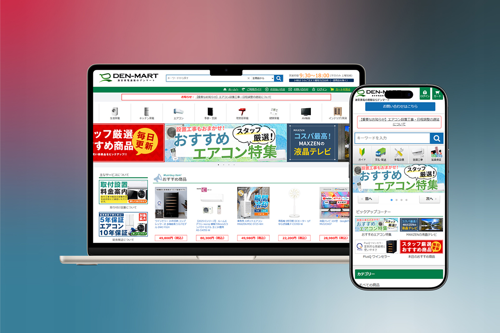

激安家電のデンマートECサイト
リニューアル構築

- 担当範囲
- ヒアリング / デザイン / HTML・CSS・JavaScript実装 / ASPカート（MakeShop等）初期構築・モール設定 / 保守・運用管理
- 課題・目的
- 旧サイトの老朽化への対応と、APIを活用した受注管理システム連携によるバックオフィス業務の効率化を目的としたASPカートへの移行・全面リニューアル。
- 実績・成果
- ヒアリングから構築まで一括して担当することで外部委託費を削減し、制作リードタイムを短縮。構築後も受注処理等の業務負荷を軽減させるとともに、社内ニーズに応じた迅速な機能改善や企画ページの更新・保守管理を継続し、売上拡大に貢献。